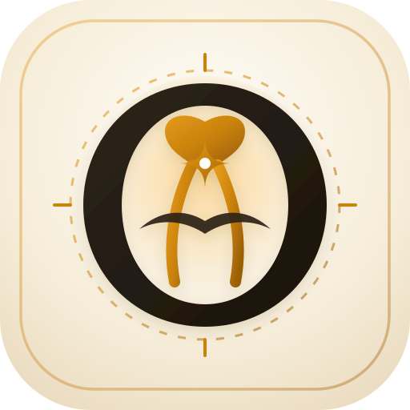

32 résumés disponibles

Synchronisez les 32 articles (avec résumés FR, abstracts originaux et PDFs Open-Access) dans votre Zotero ou téléchargez le fichier d'import :
HR = 2,50, p = 0,01) . Sur 1 720 patients en méta-analyse, opérer avant 4 à 6 semaines réduit de 74 % les sciatalgies post-opératoires (RR = 0,26) et de 49 % les re-ruptures (RR = 0,51) .OR = 6,04) le retour au sport au niveau antérieur (67,7 % vs 26,7 %) avec 89,5 % de satisfaction contre 25 % sans chirurgie , et un score PHAS qui continue de progresser jusqu'à 8 ans post-opératoires (PHAS = 87,5 à > 10 ans) .Hip-RSI ≥ 51,7 à M4 , Short-PHAS ≥ 47/65 à M8 et PHAS ≥ 86/100 à M9 , avec appui immédiat sans attelle validé en Niveau I (essai PHARRLAP) et +49 % de sarcomères en série après 9 semaines de Nordic Hamstring .Hip-RSI ≥ 51,7 (M4), Short-PHAS ≥ 47/65 (M8), PHAS ≥ 86/100 (M9) + sprint maximal indolore.
Le complexe musculo-tendineux des ischio-jambiers (chef long du biceps fémoral [BFlh] et semi-tendineux [ST] formant le tendon conjoint médial/superficiel, et semi-membraneux [SM] s'insérant sur la facette antéro-latérale de la tubérosité ischiatique) présente une vulnérabilité biomécanique unique en raison de son caractère bi-articulaire (extension de hanche et flexion de genou) et de la proximité immédiate du nerf sciatique. Les six publications de ce premier axe redéfinissent l'ensemble de la chaîne diagnostique, du choix de l'examen initial jusqu'à l'interprétation des IRM 3 Tesla post-opératoires.
Dans une étude de cohorte portant sur 392 patients opérés d'une avulsion proximale des ischio-jambiers entre 2012 et 2020 (1er auteur : Lefèvre N, KSSTA 2024), les auteurs ont comparé l'impact pronostique du parcours débutant par une échographie (US-first) à celui débutant directement par une IRM (MRI-first).En raison de la profondeur de la tubérosité ischiatique sous le muscle grand fessier et du volume de l'hématome aigu, l'échographie initiale est fréquemment faussement rassurante ou imprécise, imposant une IRM secondaire qui retarde toute la filière de soins. Les résultats démontrent que prescrire une IRM d'emblée réduit de 10 jours le délai médian entre l'accident et l'intervention chirurgicale : 20,0 jours (IQR 11–61) dans le groupe IRM première contre 30,0 jours (IQR 18–74) après échographie initiale. Ce gain de 10 jours maintient les patients en deçà du seuil critique de 32 jours et se traduit, à plus de 4 ans de recul, par des scores d'activité sportive Tegner (médiane 5 vs 4) et UCLA significativement supérieurs.
L'estimation radiologique de la rétraction tendineuse conditionne le choix entre une réinsertion primaire directe et une reconstruction par allogreffe. Sur une série consécutive de 81 avulsions proximales opérées (1er auteur : Lefèvre N, KSSTA 2025), l'équipe parisienne a décrit et validé un nouveau signe sémiologique sur les coupes coronales et sagittales T2/DP-FatSat : le « Signe du Cobra ». Il correspond à un tendon proximal rétracté dessinant une bande hypo-intense ondulée dont l'extrémité libre se replie distalement sur elle-même, évoquant la silhouette d'une tête de cobra dressée. Identifié chez 25 patients à l'IRM, ce signe correspondait chirurgicalement dans 100 % des cas confirmés à une avulsion du tendon semi-membraneux, avec une spécificité de 83,3 % (sensibilité 51,5 %, rapport de vraisemblance positif LR+ = 3,0). En pratique chirurgicale, la mesure radiologique prise au sommet de la courbure surestime la rétraction réelle de 21 % : la distance mesurée en IRM est de 10,05 ± 3,0 cm alors que la rétraction réelle mesurée en per-opératoire après déroulement du moignon tendineux n'est que de 7,9 ± 2,5 cm (différence moyenne de 2,0 cm, p < 0,001). Reconnaître le Signe du Cobra permet donc au chirurgien de savoir qu'il dispose de 2 cm supplémentaires de longueur tendineuse après déplissement et d'éviter de récuser à tort une réinsertion anatomique directe.
Sur le plan diagnostique initial, la revue de Weber MA et al. (Skeletal Radiology 2026) rappelle l'opposition biomécanique fondamentale entre deux mécanismes lésionnels : le sprint à haute vélocité en fin de phase d'oscillation (qui lèse préférentiellement la jonction myo-tendineuse et l'aponévrose centrale du chef long du biceps fémoral) et l'étirement forcé (overstretch) associant hyperflexion de hanche et extension de genou (ski nautique, grand écart, glissade, chute au rugby, qui arrache préférentiellement le tendon libre proximal du semi-membraneux ou l'empreinte ischiatique complète).
Sur le plan du suivi post-opératoire, l'étude longitudinale de Mechó S, Lempainen L, Kassarjian A et al. (Skeletal Radiology 2026 — FC Barcelone) a analysé 43 IRM 3 Tesla réalisées au cours des 4 premiers mois suivant une réparation chirurgicale complète chez 20 footballeurs professionnels. Chez les joueurs ayant une évolution clinique parfaitement normale, l'IRM montre quasi constamment des fentes intra-tendineuses longitudinales (73,3 %) et transversales (86,7 %), une angulation tendineuse (100 %), un contour musculaire émoussé (86,7 %) et un pseudo-œdème de dénervation musculaire (66,7 %). À 4 mois, bien que la cicatrice fibreuse devienne mature en hyposignal dans 100 % des cas, des fentes intra-tendineuses résiduelles persistent chez ~40 % des athlètes asymptomatiques. Il ne faut donc jamais retarder la reprise sportive sur la seule présence d'une fente linéaire résiduelle au sein d'un cal mature ; seule la triade « fente large + cavité liquide en franc hypersignal DP-FS + cicatrice immature » annonce une rechute clinique.
Le Consensus International de Londres — Partie 1 (1er auteur : Paton BM, BJSM 2023), mené par méthode Delphi auprès de 112 experts internationaux (taux de réponse de 88,4 %), établit que la classification BAMIC (British Athletics Muscle Injury Classification, grades 0 à 4 associés à la localisation anatomique : a myofasciale, b jonction myo-tendineuse, c tendon intra-musculaire) est le système le plus utilisé au monde (58 % des experts, contre 12 % pour Munich et 6 % pour Barcelone). Le panel recommande d'enrichir la BAMIC en précisant systématiquement le muscle exact atteint, le caractère proximal/central/distal et l'existence d'une perte de tension (loss of tension).
L'importance pratique du sous-type c est démontrée par l'étude de Giakoumis M, Pollock N et al. (Scand J Med Sci Sports 2025) chez les athlètes d'athlétisme d'élite de British Athletics : d'une part, 30 % des lésions aiguës sont précédées dans les 7 jours par des prodromes (raideurs lombaires ou crampes postérieures) ; d'autre part, les lésions du tendon central (BAMIC classe c) entraînent une douleur significativement plus élevée à la marche et à la contraction isométrique et retardent la reprise du footing indolore (p = 0,04). Surtout, les auteurs prouvent que le délai de disparition de la douleur à la palpation directe (p = 0,69) ou dans les gestes quotidiens (p = 0,30) ne prédit aucunement la durée totale de rééducation, alors que les tests de mise en tension active en course externe — le test d'extension active du genou à flexion maximale de hanche (MHFAKE, p = 0,01) et le H-test d'Askling — sont hautement prédictifs du retour à l'entraînement complet.
Les avulsions proximales des ischio-jambiers (PHAI) représentent la forme la plus sévère des lésions postérieures de la cuisse. Longtemps débattue quant à ses indications d'âge et de délai, leur prise en charge a été révolutionnée par les travaux prospectifs de la cohorte parisienne PHAS (Proximal Hamstring Avulsion Surgery, Dr Nicolas Lefèvre, Clinique du Sport Paris, NCT02906865) portant sur plus de 750 patients opérés et corroborés par la méta-analyse internationale de 2026 sur 1 720 réparations.
| 1er Auteur & Revue | Référence (PMID) | Population | Résultats Cliniques & Statistiques Clés |
|---|---|---|---|
| 👤 Lefèvre N OJSM 2026 |
757 opérés (PHAS) | Complications globales 10,4 % (5,6 % re-ruptures, 4,7 % autres) ; 75 % < 5,5 mois ; FdR : accident du travail (OR = 5,59) et SM isolé (OR = 12,1). Gêne assise : 5 %. |
|
| 👤 Lefèvre N OJSM 2026 |
139 opérés (≥ 8 ans, moy. 10,3 ans) | PHAS = 87,5 ± 14,9 à > 10 ans ; UCLA de 3,1 à 7,5 ; amélioration continue jusqu'à 8 ans ; chirurgie chronique (> 4 sem.) : OR ~6 de mauvais PHAS. | |
| 👤 Akhtar M AJSM 2026 |
Méta-analyse (1 720 patients) | Réparation précoce (≤ 4–6 sem.) : réduction de 74 % des sciatalgies (RR = 0,26) et de 49 % des re-ruptures (RR = 0,51). |
|
| 👤 Lefèvre N KSSTA 2025 |
298 appariés (< 50 vs > 50 ans) | Gain fonctionnel majeur avant (41,8 ans) et après 50 ans (58,0 ans) ; taux de complications et de retour au sport identiques (p > 0,05). | |
| 👤 Lefèvre N AJSM 2024 |
127 appariés (95 opérés vs 32 non opérés) | À > 4 ans : PHAS 86,3 vs 69,8 ; RTS même niveau 67,7 % vs 26,7 % (OR = 6,04) ; satisfaction 89,5 % vs 25 %. |
|
| 👤 Lefèvre N AJSM 2024 |
740 opérés (PHAS) | Taux de re-rupture 4,59 % (médiane 88,5 j, 74 % atraumatiques) ; seuil ROC optimal = 32 jours (HR = 2,50) ; avulsion complète (HR = 4,33). |
|
| 👤 Lefèvre N AJSM 2024 |
64 athlètes professionnels | 98,4 % de RTS, dont 78,1 % au niveau pro antérieur à 6,2 ± 2,5 mois (football 95,2 %, handball/escrime 100 %). |
Dans une étude comparative appariée par score de propension avec plus de 4 ans de recul moyen (50,7 vs 56,5 mois) portant sur 127 patients ayant tous une indication théorique de réparation (avulsion complète des 3 tendons ou avulsion partielle rétractée > 2 cm : 95 opérés vs 32 ayant refusé la chirurgie, 1er auteur : Lefèvre N, AJSM 2024), la réinsertion chirurgicale par ancres surclasse le traitement fonctionnel sur l'ensemble des critères objectifs et subjectifs : le score PHAS atteint 86,3 ± 12,1 vs 69,8 ± 17,9 (p < 0,001), le score UCLA 7,6 vs 5,7 (p < 0,001), et le score Tegner 4,6 vs 3,6 (p = 0,001). Surtout, la chirurgie multiplie par 6 les chances de retrouver son niveau sportif antérieur (67,7 % vs 26,7 % ; OR = 6,04, IC 95 % 2,44–16,09, p < 0,001) et procure un taux de satisfaction de 89,5 % contre seulement 25 % chez les patients non opérés.
Sur une cohorte de 740 patients opérés d'une réinsertion primaire (suivi moyen 4,9 ± 3,9 ans, 1er auteur : Lefèvre N, AJSM 2024), le taux global de re-rupture documentée par IRM est faible (4,59 %, soit 34 cas). L'analyse temporelle révèle que 75 % des re-ruptures surviennent au cours des 6 premiers mois (délai médian 88,5 jours, IQR 47–188) et que 74 % (25/34) surviennent de façon atraumatique lors d'activités banales. En régression de Cox multivariée, deux facteurs prédictifs indépendants dominent : le caractère complet de l'avulsion initiale (HR = 4,33, p = 0,01) et le délai opératoire. Par analyse de courbe ROC, les auteurs déterminent pour la première fois le seuil optimal exact de 32 jours : au-delà de 32 jours entre le traumatisme et l'intervention, le risque de re-rupture est multiplié par 2,5 (HR = 2,50, IC 95 % 1,24–5,06, p = 0,01).
Cette frontière est intégralement confirmée par la revue systématique et méta-analyse de Akhtar M et al. (AJSM 2026) regroupant 12 études et 1 720 patients (992 réparations précoces ≤ 4–6 semaines vs 728 réparations différées) : opérer précocement réduit de 74 % le risque de sciatalgie post-opératoire (RR = 0,26, p = 0,009) en évitant la dissection du nerf sciatique dans une gangue fibreuse cicatricielle, et diminue de 49 % le taux de re-rupture (RR = 0,51, p = 0,03).
Dans la plus vaste série mondiale publiée à ce jour (757 patients opérés entre 2002 et 2023, 1er auteur : Lefèvre N, OJSM 2026), le taux global de complications est de 10,4 % (79/757), se répartissant en 5,6 % de re-ruptures et 4,7 % de complications hors re-rupture (hématomes, infections superficielles, paresthésies sciatiques ou cutanées postérieures transitoires, thromboses veineuses), dont 75 % surviennent dans les 5,5 premiers mois. Les facteurs de risque indépendants de complications hors re-rupture sont l'accident du travail (OR = 5,59, p = 0,029) et l'avulsion isolée du semi-membraneux (OR = 12,1, p = 0,020). Fait rassurant, une gêne assise modérée à sévère ne persiste que chez 5 % de la cohorte.
À très long terme, l'étude prospective de Niveau II sur 139 patients suivis au minimum 8 ans (recul moyen 123,4 ± 30,8 mois, soit > 10,3 ans, 1er auteur : Lefèvre N, OJSM 2026) prouve la pérennité remarquable de la réparation : le score PHAS moyen atteint 87,5 ± 14,9 et le score UCLA passe de 3,1 à 7,5. Fait majeur, l'analyse ANOVA longitudinale démontre que le score PHAS continue de progresser significativement entre 1 an, 2 ans, 4 ans, 6 ans et jusqu'à 8 ans post-opératoires, tandis qu'une chirurgie tardive (> 4 semaines) multiplie par près de 6 la probabilité d'un mauvais résultat à 10 ans.
En parallèle, l'étude cas-témoins appariée sur l'indice de masse corporelle, le sexe, le type de rupture et le niveau sportif de 298 patients (149 de moins de 50 ans [moyenne 41,8 ans] vs 149 de plus de 50 ans [moyenne 58,0 ans], 1er auteur : Lefèvre N, KSSTA 2025) démontre que si le gain absolu est légèrement supérieur chez les moins de 50 ans, les quinquagénaires et sexagénaires obtiennent une amélioration fonctionnelle majeure avec des taux de complications et de retour au sport strictement identiques (p > 0,05). L'âge civil > 50 ans ne doit donc jamais faire récuser la chirurgie chez un patient actif.
Dans une série prospective dédiée à 64 athlètes professionnels opérés d'une lésion aiguë du complexe proximal (football, rugby, handball, escrime, danse, arts martiaux ; âge moyen 26,8 ans, 1er auteur : Lefèvre N, AJSM 2024), 98,4 % des sportifs ont repris la compétition et 78,1 % ont retrouvé leur niveau professionnel exact antérieur dans un délai moyen de 6,2 ± 2,5 mois (retour au niveau pro de 95,2 % chez les footballeurs et de 100 % au handball et à l'escrime). L'analyse multivariée révèle que les ruptures complètes du tendon libre proximal respectant l'empreinte osseuse (negative dropped ice cream sign, PHTR) récupèrent beaucoup plus rapidement (HR = 7,77, p = 0,02) que les avulsions tubérositaires vraies détachant l'empreinte osseuse (positive dropped ice cream sign).
Lorsque le diagnostic initial a été manqué (errance diagnostique, échographie faussement rassurante) ou après une re-rupture post-opératoire, le moignon tendineux se rétracte distalement dans la loge postérieure et s'entoure d'une fibrose dense englobant le nerf sciatique. Quatre publications récentes de l'équipe parisienne codifient la stratégie chirurgicale face à ces situations complexes.
Dans une étude comparative appariée 1:4 par score de propension (32 chirurgies de révision comparées à 128 réparations primaires, suivi moyen ~4 ans, 1er auteur : Lefèvre N, AJSM 2025), les auteurs chiffrent avec précision le pronostic des reprises chirurgicales. En raison de la perte de substance et de la rétraction tendineuse, le recours per-opératoire à une greffe de comblement (allogreffe) est quatre fois plus fréquent en révision qu'en chirurgie primaire (37,5 % vs 9,4 %, p = 0,0003). Lorsque la réparation consolide, les résultats fonctionnels restent très satisfaisants (score PHAS médian de 85,0 en révision contre 91,5 en primaire, p = 0,01). Toutefois, le taux de nouvelle re-rupture atteint 31,3 % (10/32) après révision contre seulement 3,9 % (5/128) après réparation primaire, soit un risque multiplié par plus de 8 (HR = 8,19, IC 95 % 2,76–24,3). Ce constat souligne à la fois l'importance cruciale de réussir la réparation initiale en phase aiguë et la nécessité d'une protection post-opératoire prolongée après révision.
Lorsque la mobilisation extensive du complexe ischio-jambier et la neurolyse sciatique ne permettent plus d'amener le moignon sur la tubérosité ischiatique sans imposer une flexion de genou excessive (> 30–45°), l'interposition d'une allogreffe structurelle constitue la technique de sauvetage de référence. Sur une cohorte de 42 patients opérés entre 2016 et 2023 (suivi moyen 3,4 ± 1,6 ans, minimum 2 ans, 1er auteur : Lefèvre N, Arthroscopy 2026), le score PHAS médian progresse de 56,3 (IQR 49,0–64,0) en pré-opératoire à 84,5 (IQR 73,8–94,8) au dernier recul. L'analyse psychométrique par méthode d'ancrage montre que 56,4 % des patients franchissent le seuil exigeant du Patient Acceptable Symptom State (PASS > 82,3). La récupération pour la vie quotidienne et les activités de loisir est excellente, mais les patients doivent être loyalement informés que le retour au sport de compétition au niveau pré-lésionnel demeure plus limité qu'après réparation directe aiguë.
Deux notes techniques publiées dans Arthroscopy Techniques en 2025 détaillent pas à pas les gestes opératoires :
• La reconstruction par allogreffe fraîche congelée de tendon quadricipital (1er auteur : Lefèvre N, Arthrosc Tech 2025, PMID 41132280) : par abord longitudinal sous-fessier élargi et après neurolyse du nerf sciatique, l'extrémité proximale épaisse de l'allogreffe quadricipitale (sans baguette osseuse) est solidement fixée sur la tubérosité ischiatique par des ancres de suture, tandis que son large éventail tendineux distal vient envelopper et ponter le moignon ischio-jambier rétracté par sutures non résorbables sous tension physiologique à 20–30° de flexion de genou.
• La réinsertion anatomique des avulsions isolées du semi-membraneux chez le sportif (1er auteur : Lefèvre N, Arthrosc Tech 2025, PMID 41220667) : plus rare que l'avulsion du tendon conjoint, la rupture isolée du SM survient volontiers lors d'un grand écart forcé ou d'un coup de pied haut. La technique codifie l'identification et le déroulement du moignon replié sur lui-même (Signe du Cobra), la protection du pédicule sciatique situé immédiatement en latéral, l'avivement spécifique de la facette antéro-latérale (en croissant) de la tubérosité ischiatique et la réinsertion trans-tendineuse par 2 à 3 ancres.
Outre les avulsions traumatiques aiguës, la région ischiatique est le siège de pathologies d'interface entre les tendons proximaux, la bourse ischiatique et le nerf sciatique : la tendinopathie proximale chronique (PHT), les ruptures partielles de haut grade accessibles à l'endoscopie et l'irritation œdémateuse péri-sciatique.
La tendinopathie proximale chronique des ischio-jambiers (PHT) provoque des douleurs ischiatiques basses en position assise prolongée, en conduite automobile et lors de la course rapide. Lorsque plus de 6 mois de traitement conservateur bien conduit (renforcement excentrique et isométrique lourd, ondes de choc radiales/focales, infiltrations de PRP) échouent, la chirurgie devient légitime. Sur une cohorte de 42 patients (âge moyen 50,4 ± 10,4 ans, suivi moyen 4,1 ans [2,0 à 12,6 ans], 1er auteur : Lefèvre N, AJSM 2026), la réalisation par abord sous-fessier court d'une ténotomie partielle d'excision des tissus dégénératifs/fissuraires associée à une réinsertion trans-osseuse sur ancres et à une neurolyse sciatique à la demande fait progresser le score PHAS moyen de 63,0 ± 11,4 en pré-opératoire à 84,2 ± 18,2 au dernier recul (p < 0,001), avec une nette amélioration des scores UCLA et Tegner et un taux élevé de retour au sport.
L'endoscopie de l'espace sous-fessier profond (deep gluteal space) offre une alternative mini-invasive pour les déchirures partielles de haut grade et les avulsions aiguës peu rétractées (< 2–3 cm). L'étude de Greenwood SN, Mather RC et al. (Arthroscopy 2026) rapporte le plus long suivi publié à ce jour avec un recul moyen de 7,6 ± 1,08 ans (minimum 6,2 ans, maximum 10,6 ans). À ce terme, les résultats fonctionnels demeurent excellents et stables : score de Harris modifié (mHHS) à 82,6, score HOS à 83,2, sous-score sportif HOS-SSS à 89,2/100, score SANE à 80,2 %, iHOT-12 à 79,5 et EVA douleur résiduelle à seulement 1,7/10. Au total, 86,4 % des patients se déclarent satisfaits de l'intervention et 85,7 % franchissent le seuil PASS.
Dans une étude prospective portant sur 96 lésions aiguës des ischio-jambiers chez des joueurs de football américain de NCAA Division I (1er auteur : Lee KS, avec Heiderscheit B, BJSM 2026), les radiologues ont quantifié sur les coupes axiales T2/DP-FatSat l'extension de l'œdème périlésionnel au contact du nerf sciatique : absence de contact (21,9 %), contact partiel < 360° (36,5 %) ou engainement circonférentiel complet à 360° (41,7 %). L'étude démontre que l'œdème touche le nerf sciatique dans 78,1 % des déchirures aiguës et que l'engainement circonférentiel complet augmente positivement avec le grade BAMIC et constitue un facteur pronostique indépendant d'allongement significatif du délai de retour à la compétition, justifiant l'évaluation neurologique et le travail neurodynamique doux en rééducation.
Le Consensus International de Londres — Partie 2 (1er auteur : Plastow R, avec Kerkhoffs GMMJ et Haddad FS, BJSM 2023) synthétise l'accord des experts mondiaux sur les indications chirurgicales de l'ensemble du complexe ischio-jambier. Trois critères majeurs emportent un consensus formel pour opérer en phase aiguë : 1° l'existence d'un écart inter-fragmentaire (gapping) avec perte de tension musculo-tendineuse (87,2 % d'accord) ; 2° les avulsions osseuses déplacées de l'ischion (72,8 %) ; 3° les ruptures du tendon libre proximal entraînant un déficit de force ou une perte fonctionnelle (72,2 %). Par ailleurs, le panel rejette formellement les infiltrations de corticoïdes dans les lésions aiguës en raison de leur effet délétère sur la cicatrisation collagénique.
Bien que plus rares que les lésions proximales ou corporéales, les atteintes distales du biceps fémoral représentent un piège redoutable chez le sportif de haut niveau. Elles regroupent deux entités anatomiques distinctes : les lésions de la jonction musculo-tendineuse distale en T (DMTJ) et les avulsions tendineuses distales sur la tête fibulaire.
Au tiers distal de la cuisse, les aponévroses du chef long du biceps fémoral (innervé par la composante tibiale du nerf sciatique) et du chef court du biceps fémoral (innervé par la composante fibulaire commune) fusionnent selon une architecture complexe en « T » (Distal Musculotendinous T-Junction, DMTJ). Dans une revue sémiologique de 106 IRM de lésions distales du biceps fémoral chez l'athlète (1er auteur : Entwisle T, avec Brukner P et Connell D, OJSM 2017), l'atteinte isolée du composant du chef long représente 51 % des cas, l'atteinte combinée des deux chefs 43 % et celle du chef court isolé 6 %. Le résultat clinique majeur de cette étude est le taux alarmant de rechute sous traitement conservateur : 54 % de récidive globale, dont 76 % surviennent dans les 3 premiers mois suivant la reprise et 86 % présentent un grade IRM égal ou plus sévère que la blessure initiale. Cette instabilité mécanique s'explique par le cisaillement asynchrone entre les deux chefs à double innervation lors du sprint.
Pour contrer ce taux d'échec de 54 %, l'équipe londonienne du Pr Fares Haddad (1er auteur : Kayani B, AJSM 2020) a évalué prospectivement la réparation chirurgicale primaire chez 34 athlètes professionnels présentant une rupture aiguë de la jonction en T avec perte de tension et gapping à l'IRM. Par un abord postéro-latéral centré sur la gouttière bicipitale, la continuité et la tension de l'aponévrose en T sont restaurées par sutures anatomiques étagées suivies d'une rééducation précoce protégée. À 28,4 mois de suivi moyen, 100 % des athlètes ont repris la compétition à leur niveau professionnel antérieur dans un délai moyen de 11,7 ± 3,6 semaines, avec un taux de récidive ramené à 0 % et une récupération complète de la force isocinétique et de la souplesse.
Plus bas encore, l'avulsion du tendon distal du biceps fémoral sur l'apex de la tête fibulaire compromet à la fois la flexion active du genou et la stabilité rotatoire postéro-latérale. Sur une série prospective de 22 sportifs professionnels (football Premier League, rugby international ; âge moyen 25 ± 4,3 ans, 1er auteur : Thompson JW, avec Haddad FS, OJSM 2021) opérés en moyenne 12 jours après l'accident par neurolyse systématique du nerf fibulaire commun et réinsertion anatomique trans-osseuse par ancres de suture sur la tête de la fibula, 100 % des joueurs ont repris leur sport au niveau professionnel antérieur en 16,7 ± 8,7 semaines (9,6 semaines pour la course, 12,4 semaines pour l'entraînement collectif), sans aucune re-rupture (0 %) à 24 mois.
Pendant longtemps, l'évaluation des réparations des ischio-jambiers a souffert de l'utilisation de scores de hanche (Harris Hip Score) ou de genou (Lysholm) souffrant d'un important effet plafond. Les six études de cette section associent les trois scores spécifiques validés par l'école parisienne (PHAS, Short-PHAS, Hip-RSI) aux preuves de Niveau I sur la rééducation post-opératoire sans attelle (essai PHARRLAP), la mécanobiologie des sarcomères (Nordic Hamstring) et le Consensus de Londres Partie 3.
| Outil / Protocole | 1er Auteur & PMID | Validation & Seuils Décisionnels en Pratique Clinique |
|---|---|---|
| PHAS (36 items / 100) AJSM 2024 |
Validé sur 156 patients (ICC = 0,96 ; α = 0,86 ; aucun effet plafond). Seuil à 9 mois : PHAS ≥ 86/100 prédit le RTS à 1 an (spécificité 81,4 %). | |
| Short-PHAS (12 items / 65) OJSM 2026 |
Validé sur 335 patients (corrélation r = 0,94 avec le PHAS long ; α = 0,85). Seuils à 8 mois : 39/65 (RTS global), 46/65 (même sport), 47/65 (niveau antérieur, AUC = 0,75). | |
| Hip-RSI (Psychologique) OJSM 2025 |
Validé sur 84 patients (ICC = 0,89 ; r = 0,55 avec PHAS). Seuil à 4 mois : Hip-RSI ≥ 51,7/100 prédit le retour au sport antérieur à 9 mois (spécificité 77 %, AUC = 0,76). | |
| Essai RCT PHARRLAP AJSM 2026 |
Niveau I (57 patients, suivi 2 ans) : la rééducation accélérée sans attelle avec appui immédiat toléré réduit la douleur à 3 et 12 mois avec une force isocinétique et un taux de re-rupture identiques au protocole avec attelle 6 semaines. | |
| Nordic Hamstring & Sarcomères J Sport Health Sci 2025 |
Preuve in vivo humaine (micro-endoscopie) : 9 sem. de Nordic Hamstring = +40 % de force, +33 % de longueur fasciculaire et +49 % de sarcomères en série dans le BFlh distal (mais réversion de -16 % après 3 sem. d'arrêt). | |
| Consensus Londres (Partie 3) BJSM 2023 |
Intégration de la chaîne cinétique lombo-pelvienne (95 %) et exigence d'un sprint maximal indolore (85,5 %) avant retour à la compétition. |
• Le score PHAS original (36 items / 100 points) (1er auteur : Lefèvre N, AJSM 2024) : validé sur 156 patients avec un recul moyen de 69 mois, le Parisian Hamstring Avulsion Score présente une excellente cohérence interne (Cronbach α = 0,86), une reproductibilité test-retest remarquable (ICC = 0,96), un changement minimal détectable (MDC) de 12,9 points et aucun effet plafond ni plancher. Un score PHAS ≥ 86/100 à 9 mois prédit le retour au sport à 1 an avec une spécificité de 81,4 % et une sensibilité de 65,6 % (AUC > 0,70).
• Le Short-PHAS (12 items / 65 points) (1er auteur : Kassab Hassan S, avec Lefèvre N et Hardy A, OJSM 2026) : développé et validé prospectivement sur 335 patients (âge moyen 48 ± 10 ans) pour simplifier le suivi courant en consultation et par smartphone, ce score condensé en 12 items conserve une excellente cohérence interne (α = 0,85) et une corrélation quasi parfaite avec le PHAS long (r = 0,94). À 8 mois post-opératoires, trois seuils décisionnels sur 65 points sont validés : 39/65 pour le retour au sport global (AUC = 0,75), 46/65 pour la reprise du même sport (AUC = 0,69) et 47/65 pour le retour au même sport au niveau pré-lésionnel (AUC = 0,75).
• Le score psychologique Hip-RSI (/100 points) (1er auteur : Hadjam T, avec Lefèvre N et Hardy A, OJSM 2025) : évalué à 4 et 9 mois chez 84 patients opérés d'une avulsion proximale, le Hip-Return to Sport after Injury quantifie la kinésiophobie et la confiance psychologique lors de la course et de la flexion de tronc. Très reproductible (ICC = 0,89) et corrélé au PHAS (r = 0,55), un seuil de Hip-RSI ≥ 51,7/100 dès 4 mois post-opératoires prédit le retour au sport pré-lésionnel à 9 mois avec une spécificité de 77 % et une sensibilité de 69 % (AUC = 0,76), permettant de cibler précocement les patients nécessitant un accompagnement de réathlétisation mentale.
L'essai contrôlé randomisé de Niveau I PHARRLAP (1er auteur : Ebert JR, AJSM 2026) a comparé sur 2 ans 57 patients opérés d'une avulsion aiguë d'au moins 2 tendons : 30 patients dans un parcours conservateur (6 semaines d'attelle articulée de genou et appui restreint) contre 27 patients dans un parcours accéléré (aucune attelle et appui complet immédiat selon tolérance avec protection des flexions de tronc jambes tendues). Le groupe accéléré présente significativement moins de douleurs à 3 mois (p = 0,034) et à 12 mois (p = 0,010) ainsi qu'un meilleur score physique SF-12 à 3 mois (p = 0,039). Les mesures objectives par dynamométrie isocinétique (couple de pointe des fléchisseurs PKFT et indice de symétrie LSI) et saut monopodal (Single-Leg Hop) à 6, 12 et 24 mois sont strictement identiques entre les deux groupes, sans sur-risque de re-rupture (2 cas dans chaque groupe sur 24 mois).
Sur le plan fondamental et préventif, l'étude de Andrews MH, Delp SL et al. (J Sport Health Sci 2025 — Stanford / Queensland) utilise pour la première fois chez l'humain la micro-endoscopie in vivo par génération de seconde harmonique couplée à l'échographie 3D et à l'IRM de diffusion pour mesurer directement les sarcomères du chef long du biceps fémoral avant et après 9 semaines d'entraînement excentrique en Nordic Hamstring Exercise (NHE). L'entraînement augmente la force excentrique de +40 %, le volume musculaire de +15 % et la longueur des fascicules de +19 % au centre et +33 % en distal grâce à une véritable addition de sarcomères en série de +25 % en région centrale et de +49 % en région distale. Point capital pour les staffs médicaux : après seulement 3 semaines d'arrêt (detraining), la longueur fasciculaire rechute déjà de 12 % à 16 %, prouvant qu'un maintien micro-dosé hebdomadaire du Nordic Hamstring est indispensable toute l'année.
Enfin, le Consensus International de Londres — Partie 3 (1er auteur : Paton BM, avec van Dyk N et Haddad FS, BJSM 2023) établit à 95 % d'accord l'obligation d'intégrer le contrôle lombo-pelvien et la chaîne cinétique globale dans la rééducation, de combiner les exercices à dominante hanche (hip extensor : soulevé de terre roumain, 45° hip extension) et à dominante genou (knee flexor : Nordic hamstring, leg curl excentrique), et exige à 85,5 % d'accord la validation d'un sprint à vitesse maximale strictement indolore sur le terrain avant d'autoriser le retour au jeu.
Hip-RSI ≥ 51,7 à M4, Short-PHAS ≥ 47/65 à M8, PHAS ≥ 86/100 à M9), privilégier une mobilisation précoce sans attelle rigide dans les réparations aiguës standard, et maintenir un rappel hebdomadaire permanent de Nordic Hamstring (+49 % de sarcomères en série).
Les tendons du semi-tendineux (ST) et du gracilis (G) constituent l'autogreffe la plus utilisée au monde pour la reconstruction du ligament croisé antérieur (DIDT / DT4). Or, le prélèvement de ces tendons modifie durablement l'anatomie et la biomécanique de la loge postéro-médiale de la cuisse. Deux études majeures éclairent les conséquences musculaires à long terme de ce prélèvement et l'intérêt de préserver l'insertion distale sur la patte d'oie.
Dans une étude par IRM bilatérale comparative haute résolution réalisée à 6,8 ans de recul moyen après reconstruction du LCA par autogreffe ST/Gracilis (1er auteur : Speedtsberg MB, avec Hölmich P, KSSTA 2022), les auteurs ont comparé la longueur du corps musculaire du semi-tendineux et du chef long du biceps fémoral entre le membre opéré, le membre controlatéral sain et une cohorte témoin non opérée. Alors que la variation naturelle inter-membre de la longueur du semi-tendineux chez le sujet sain est toujours inférieure à 10 mm, le muscle semi-tendineux prélevé présente un raccourcissement proximal définitif moyen de 81 mm (soit -25 % de sa longueur anatomique, p < 0,001), accompagné d'une diminution tendineuse de 70 mm, sans hypertrophie compensatrice significative de la longueur du biceps fémoral. Cette rétraction myo-tendineuse irréversible déplace la relation tension-longueur du semi-tendineux et explique directement le déficit persistant de force de flexion active du genou aux angles élevés (> 70–90°) ainsi que la vulnérabilité accrue des ischio-jambiers après plastie du LCA.
Lors du prélèvement classique au stripper fermé, la désinsertion distale des tendons sur la patte d'oie interrompt leur vascularisation native et impose au transplant une phase de nécrose avasculaire suivie d'une lente revascularisation (graft swelling puis ligamentisation). Dans un essai contrôlé randomisé de Niveau I portant sur 56 patients évalués par IRM séquentielles à 3, 6 et 9 mois et arthrométrie KT-2000 (1er auteur : Sinha S, AJSM 2026), les auteurs ont comparé la greffe libre classique (FG) à la technique conservant l'attache tibiale native des tendons ischio-jambiers sur la patte d'oie (Attachment-Sparing, AS) grâce à un stripper ouvert. Dès 3 mois, 26,3 % des greffons pédiculés affichent un score IRM de maturation de Figueroa ≥ 4 (contre 0 % avant 6 mois dans le groupe greffe libre). À 9 mois, 100 % des patients du groupe pédiculé atteignent le score maximal de maturation IRM (Figueroa 5/5) contre seulement 10 % dans le groupe greffe libre (p < 0,001). De plus, le maintien du pédicule tibial supprime totalement la phase de gonflement œdémateux du greffon à 3 et 6 mois.
| # | 1er Auteur | Année & Revue | Titre Clinique (FR) | Accès Fiche |
|---|